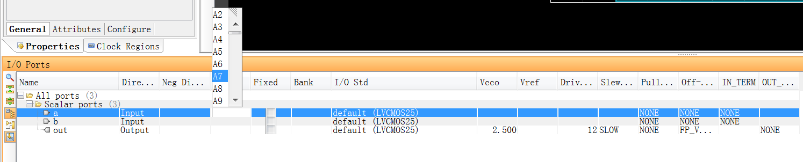

（我还可以再底一点的，从沙子开始……）
hexo-inject:begin hexo-inject:end（……好吧，我觉得不行）
国庆入了一块Xilinx的Spartan-6系列FPGA，试图把程序烧写进去。
非常惨的事情是，这家公司有问题(x)1，做的软件都没有Mac版，甚至Linux版本都限制Open Suse和Red hat发行版，而Windows却全线（甚至Server版本都）覆盖……
开始觉得Ubuntu凑合能跑，结果还是我Naive了，界面能跑但是功能都是烂的，无奈虚拟机装了个Win 7，稍微卡了点……。
所以提醒想专门搞嵌入式（含）以下的同学，一台Windows还是必要的，否则你会发现你的工具链爆炸难配（STM32还有Mac和Linux的命令行方案，FPGA我还真没找着，知道的神仙请务必告诉我）。
当然你要告诉我你机器好任性跑在虚拟机里一点不卡那我只能说有钱是可以为所欲为的……
安装
到这里来下载ISE，注意你可能会注意到还有个东西叫Vivado，那个是给比我等屌丝有钱的，买得起Virtex-7、Kintex-7、Artix-7、和 Zynq®-7000 这些相对高级2的FPGA的人用的……我费了半天下下来结果没用，一口老血……
作者写此文时最新版为14.7版本，我直接下载了基于 Windows 7/XP/Server 的完整安装程式。
下载网速不太稳定，貌似不是墙的问题，所以架梯子也没用……
下载完成解压，点击xsetup.exe来安装。
一路下一步，直到这里。
这里让你选择版本，WebPACK3还是Design Suite，一般小打小闹WebPACK就够了，没必要上Design Suite。
话说这玩意简直是吃硬盘的，我把电脑上其他的虚拟机都删了，凑出空间给这个Win分了40G才勉强装下……
然后其他都是默认，一路继续（包括装驱动也是继续），最后装完了会问你要Licence，这个嘛……懂的。
然后开就是了。
关掉Tip of day的废话(x)，然后new一个Project。
Name什么的自己填，Top-level source当然选HDL（图形化编程邪道去死啦（x）4）。
下一步这里比较重要的只有Family和Device两个，以我的板子为例，Family选Spartan6，Device选XC6SLX9，其他东西默认就好了。
然后创建入口module：
然后会生成Verilog代码，往里填东西就是了。
比如简单的这样一个与逻辑：
1 | module main( |
接着就是分配引脚，你可以使用GUI分配：
一直下一步，ISE会为你打开PlanAhead，在屏幕下方这里就能为这些代码里写的端口分配实际的硬件引脚了。

分配完之后会为你生成.ucf文件。

当然你也可以不借助GUI自己写这个文件，语法非常简单直白，甚至不需要我解释：
1 | NET "a" LOC = A2; |
写完添加到工程里面就行。
要注意的是你的硬件生产厂家给你的硬件接口编号往往和ISE软件里的不一样……请务必要想办法拿到映射表之类的东西。
接着编译，随便点一个绿色小箭头就行了。
然后就是烧录了，点击这里
会为你打开ISE iMPACT，点击：
然后是：
如果你看见了这个：
选No。
其他的东西默认就行。
然后在出来的设备上右键，Program就下载好了。
这样就能用了，不过你的代码并没有被存到PROM或者Flash里面，因此一reset或者掉电就丢失了，你要做一个MCS文件，这部分在
里面，双击进入：
像上图这样选择各项参数，注意第二步的时候要点一下红圈里的按键。
完了之后点OK，会让你选择你要放入Prom中的.bit文件。
接下来会问你要不要继续添加，当然No。
然后OK，右键，Generate File，mcs文件就做好了。
回到设备页面，右键你的设备。
我们这次选择
然后选择我们做出来的mcs，接着选PROM的型号
然后原来FPGA的头上就会出现Flash。
先在这个Flash上面右键，Erase清掉原来的东西。
然后右键，Program把你的程序下进去，
就好了，下次上电就会自动跑你的程序了。
1. 隔壁Quartus也这样，所以我相信这是有理由的，但隔壁的Quartus可以做一些骚操作然后在Ubuntu下面跑起来。 ↩
2. Spartan-6系列是45nm制程，穷人之选 TAT，Virtex-7、Kintex-7、Artix-7、和 Zynq®-7000是28nm，另外还有UltraSCALE和UltraSCALE+，分别是20和16nm的。 ↩
3. 不是你想的那个webpack😓 ↩
4. 讲道理做小电路图形化还是挺方便的，那个Schematic就是，具体咋玩可以自己探究。 ↩